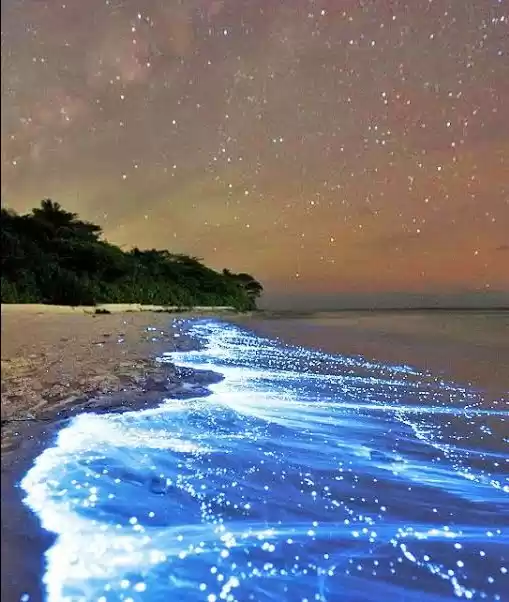
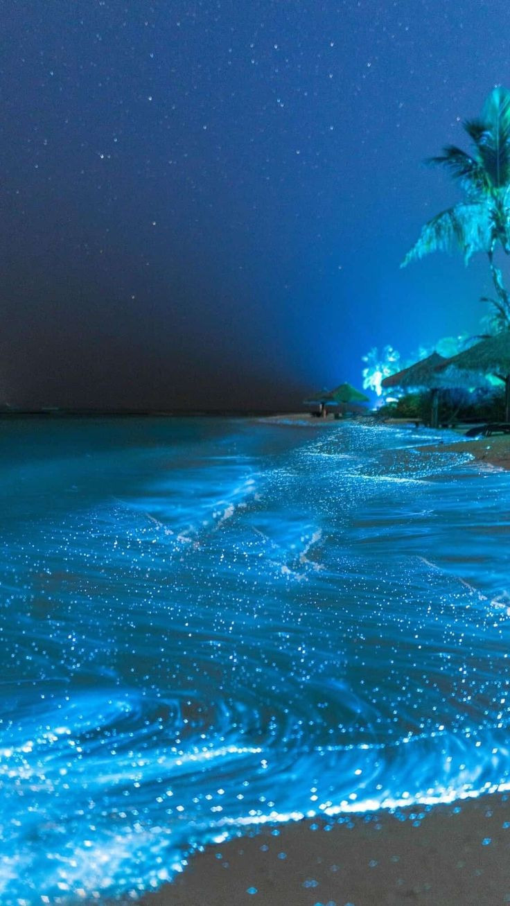

About Vaadhoo Island

Vaadhoo (Dhivehi: ވާދޫ) is one of the inhabited islands of Raa Atoll, Maldives. Famous for the
bioluminescence plankton (Redhan), the spectacular "Sea of Stars" can be experienced in this island yearly.
With clean roads and white sandy beaches, Vaadhoo is one of the most beautiful inhabited islands in the
Maldives and its local tourism industry is expected to boom in the upcoming years.
Vaadhoo island is famous for the 'sea of stars.' This marine bioluminescence is generated by phytoplankton
known as dinoflagellates. Woodland Hastings of Harvard University has for the first time identified a
special channel in the dinoflagellate cell membrane that responds to electrical signals—offering a potential
mechanism for how the algae create their unique illumination.
Visiting Vaadhoo Island

Visiting Vaadhoo Island in the Maldives promises an enchanting experience, primarily renowned for its mesmerizing bioluminescent beach. As night falls, the shoreline illuminates with a mystical blue glow, courtesy of bioluminescent plankton, offering visitors a surreal stroll akin to traversing a starlit sky. Beyond this natural wonder, Vaadhoo Island boasts pristine sandy beaches, ideal for unwinding and soaking up the serene atmosphere. Diving enthusiasts can explore vibrant coral reefs teeming with marine life, while those seeking cultural immersion can engage with the local community to gain insights into Maldivian traditions and cuisine.
Adventurous souls can indulge in an array of water sports, from snorkeling to kayaking, amidst the island's breathtaking scenery. Luxurious overwater accommodations provide the perfect retreat, complemented by sunset cruises that paint the horizon with vivid hues, creating lasting memories of this idyllic paradise.
Getting There

To reach Vaadhoo Island in the Maldives, travelers typically begin by flying into Velana International Airport (MLE) in Male, the capital city. From Male, options for reaching Vaadhoo Island include taking a domestic flight to nearby domestic airports like Maamigili Airport or Dhaalu Airport, followed by a speedboat transfer to the island. Alternatively, some resorts and tour operators offer combined packages that include a domestic flight from Male directly to Vaadhoo Island via seaplane or speedboat.
Upon arrival, guests are often greeted by resort staff or local representatives who facilitate transportation and accommodation arrangements. It's recommended to confirm transportation details with your accommodation provider prior to arrival to ensure a seamless journey to this idyllic destination.